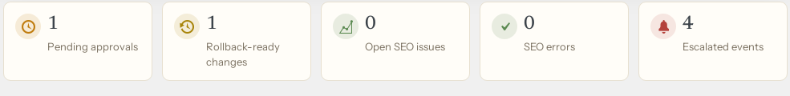
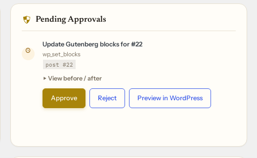
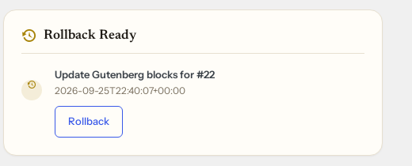

Full audit log.
One-click rollback.

Pending · needs a decision

Applied · still reversible

Every write is logged with before/after state. Approved changes apply with one click; applied changes roll back with one click.